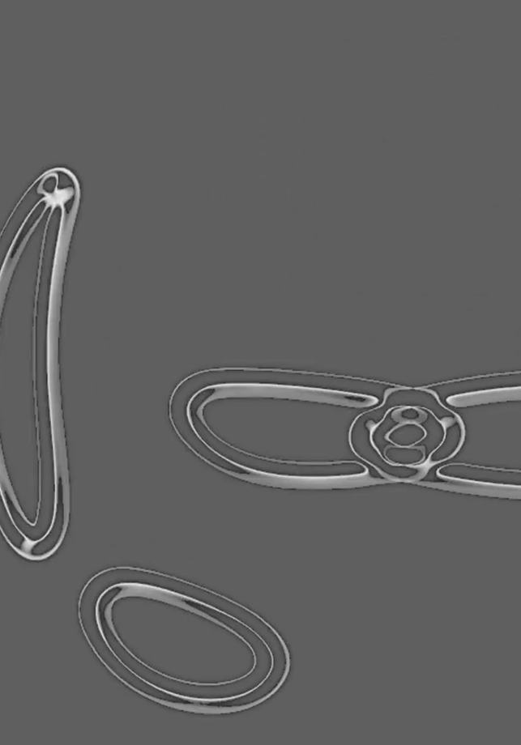

■
The Other
Animation
(2018)

“The Other” is part of a larger academic project entitled “The Real, The Other, The Under, The New” which aims to explore the different ways of perceiving noise and the way it is produced. The “Other World” is what exists beyond the physical world — the digital world. Upon the introduction of the magnetic tape, artists began to explore its potential by creating eletronic sounds.
“The Other” is part of a larger academic project entitled “The Real, The Other, The Under, The New” which aims to explore the different ways of perceiving noise and the way it is produced. The “Other World” is what exists beyond the physical world — the digital world. Upon the introduction of the magnetic tape, artists began to explore its potential by creating eletronic sounds.